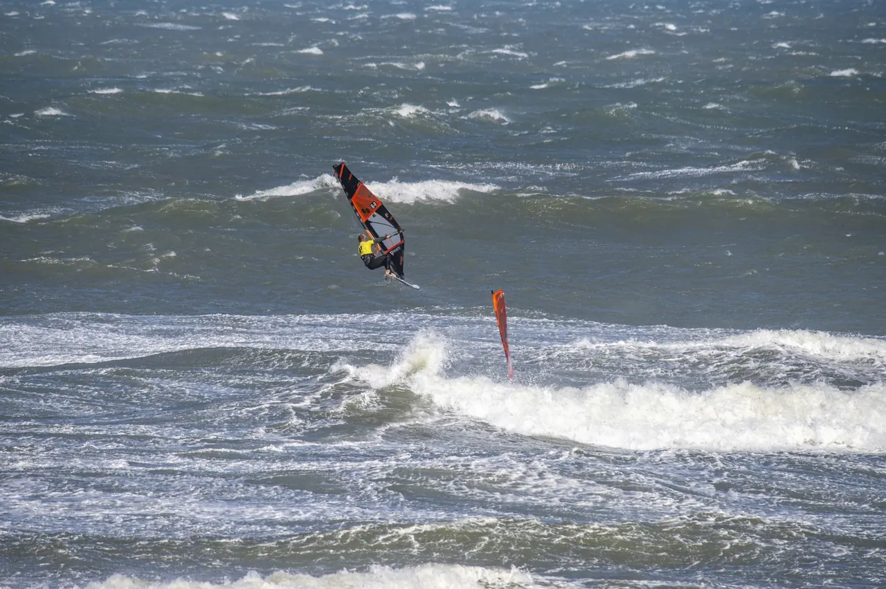

Comp
BK Wave 2025
Bk Wave 2025 was voor het eerst een Open BK wave met buitenlanders. Op windekind surfclub waaide de wind nucleair hard, gemiddeld 40 knopen Zuidwest. Een double elimination werd op 1 dag afgewerkt. Ook de jeugd en vrouwen waren van de partij. Old school versloeg New School, Thomas Beulens won dankzij z'n breed scala aan moves en prachtige turns.
- Datum
- 5 oktober 2025
- Locatie
- Windekind Oostduinkerke
- Winnaar
- Thomas Beulens
Verslag
Fiesta op
playa Windekind
Op 5 oktober was het fiesta op playa windekind. De WWSV zorgde voor het 'frietkot', de jurywagen. Windekind zelf trok hun traktor in gank om deze steeds op de perfecte locatie voor de jury te positioneren. Een zeer groot aantal deenemers kwam opdagen en 3.3 was de meest gekozen zeilmaat. De zee was ongetemd, branding tot diep in zee, een windsterkte die nooit onder de 35 kopen zakte en flirte met de 45 knopen. In totaal werden 38 heats gevaren op 1 dag. Dank aan surfclub Windekind voor de sponsoring, inzet en medewerking. S'avonds was iedereen versleten, uit elkaar gerokken, stram en verzuurd maar het gerstennat van 'Zeevonk' zorgde voor een snelle heling.

Resultaten
Hall of fame
Thomas Beulens mag eindelijk de titel op zak steken op z'n 50e. Bij het grote publiek is hij minder bekend, een local van de Webcamspot. Deze deze ripper vaart zeer constant en heeft een breed scala aan moves en een prachtige golfrijstijl. Z'n quiver zeilen is zeer beperkt, 3.7 of 4.0 is z'n grootste zeil, dus dan mag je je echt wel een stromrider noemen
BK Wave 2025
- 01Thomas Beulens
- 02Wijnand Peters (NED)
- 03Nick De Wannemaeker
Het event
Praktische info
- Datum
- 5 oktober 2025
- Locatie
- Windekind Oostduinkerke
- Tijdstip
- 8:30 - 17:00
- Deelnemers
- 32 men, 4 women, 4 U 15, 5 U 21
- Organisatie
- Stormriders
- Categorie
- BK Wave
Foto's